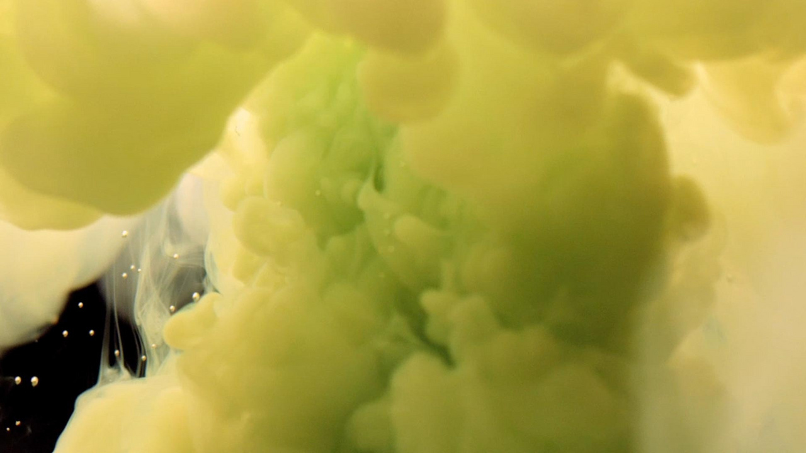
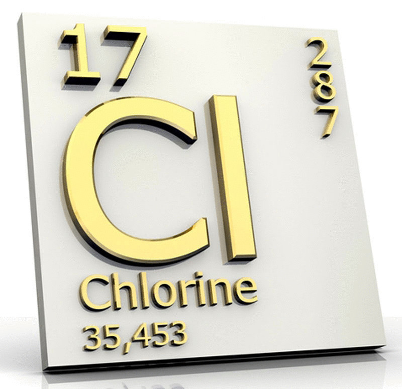
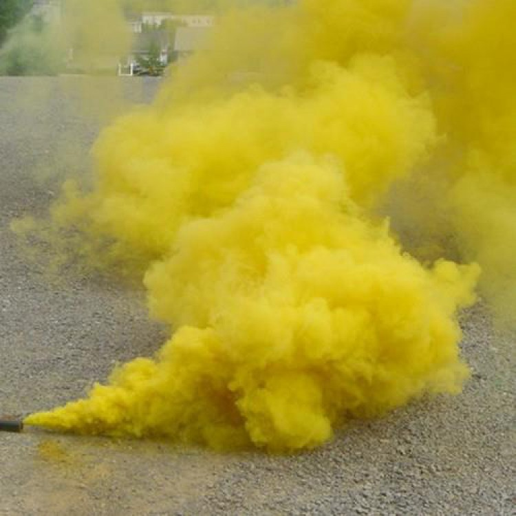

Хлор
Хлор (химический символ — Cl, от др.-греч. χλωρός — «изжелта-зелёный», от лат. Chlorum) — химический элемент 17-й группы (по устаревшей классификации — главной подгруппы седьмой группы, VIIA) третьего периода периодической системы химических элементов Д. И. Менделеева, с атомным номером 17. Простое вещество хлор (при нормальных условиях) — ядовитый удушающий двухатомный газ (формула — Cl2) желтовато-зелёного цвета, тяжелее воздуха, с резким запахом и сладковатым, «металлическим» вкусом

Газообразный хлор впервые выделен К. В. Шееле в 1774 г. окислением соляной кислоты пиролюзитом MnO2. Элементарную природу хлора установил в 1810 г. Г. Дэви и предложил в 1811 г. соответствующее окраске название «хлор» (от греч. χλωρός – жёлто-зелёный).

Хлор используют для производства окислительно-отбеливающих веществ – кальция гипохлорита, натрия гипохлорита, хлорной извести, хлоридов многих элементов, ряда хлорорганических продуктов (поливинилхлорида, хлоропренового каучука, дихлорэтана, перхлорэтилена, хлороформа, эпихлоргидрина и др.), для водоочистки. В мире на производство хлорсодержащих органических продуктов расходуется 60–75 % производимого хлора, неорганических – 10–15 %, в целлюлозно-бумажной промышленности – 5–15 %.
Содержание хлора в земной коре 0,017 % по массе, в вулканических газах – до 1,3 %. Вследствие высокой химической активности в свободном виде не встречается. Входит в состав многих минералов. Собственные минералы хлора – в основном природные хлориды: каменная соль (галит) NaCl, сильвин KCl, карналлит KCl·MgCl2·6H2O, каинит KCl·MgSO4·3H2O, бишофит MgCl2·6H2O. Главную роль в распространении хлора в земной коре играет водная миграция. Хлор в виде иона Cl– содержится в морской воде (18,83 г/дм3), подземных рассолах, соляных озёрах и др. Ионы Cl– важны для всех живых организмов (участвуют в регулировании водного обмена и др.); в составе тканей человека 0,25 % по массе хлора (в плазме крови 0,32–0,37 %), содержание хлора в тканях растений зависит от вида растения (например, в табаке – 2,3 %, в моркови – 1,5 %, в зерновых – 0,05 %).

Токсичен, раздражает слизистые оболочки, дыхательные пути и лёгкие. Хлор – первое боевое отравляющее вещество, использованное во время Первой мировой войны .